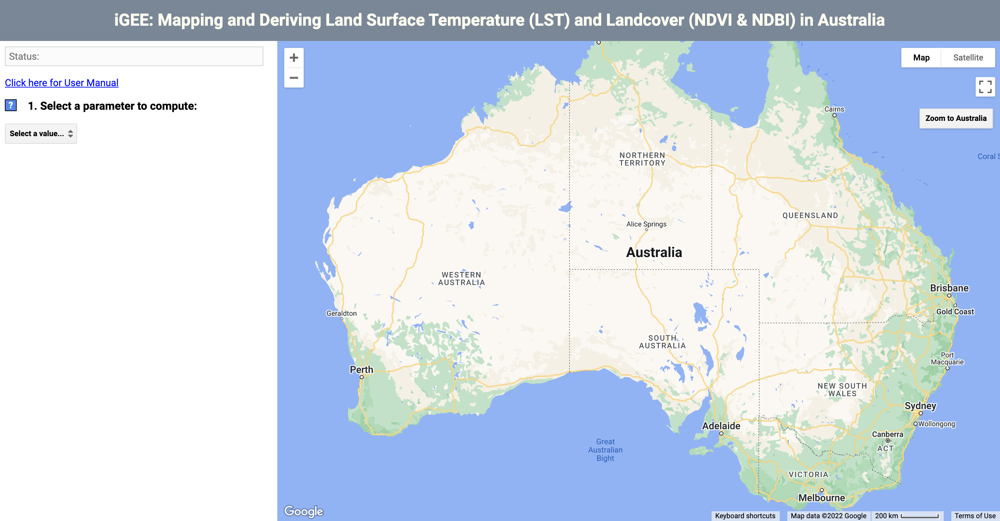
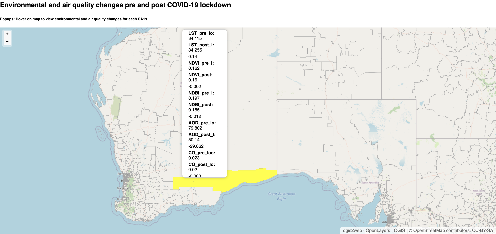

Research Projects

iGEE & iHVI toolkit
The tool is to derive land surface temperature and classify landcover types via Google Earth Engine (GEE) API, and construct heat sensitivity, heat adaptive capability indicators and composite heat vulnerability index. Enable modeling of the relationships between heat, environmental and social-economic factors.

Earth Observing and Spatial Machine Learning Environmental and Air Quality Changes
This study aims to investigate the environmental and air quality changes with the reference of before COVID-19 lockdown in Australia. In total, six Earth Observation (EO) parameters, namely Land surface temperature (LST), Normalised Difference Vegetation Index (NDVI), Normalised Difference Built-up Index (NDBI), Carbon monoxide (CO), Nitrogen dioxide (NO2) and Aerosols (AOD), were derived from Google Earth Engine (GEE) cloud platform for two periods of November 2019 - March 2020 and November 2020- March 2021.